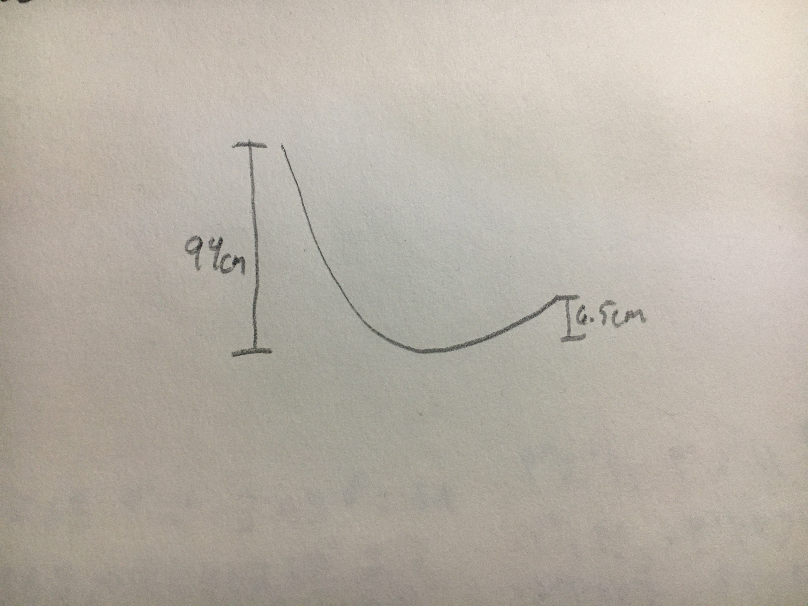
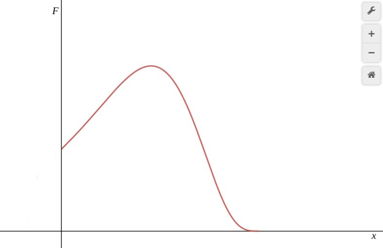
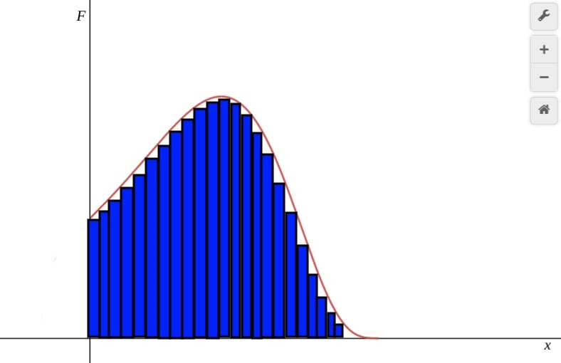
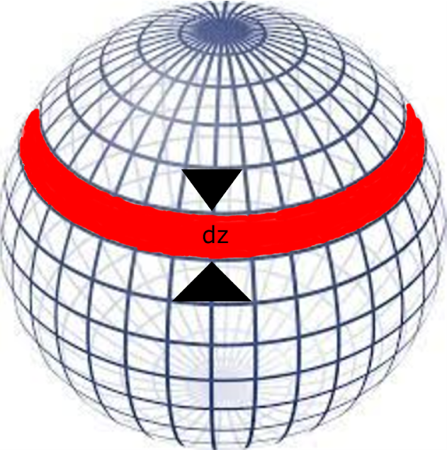
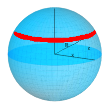

ω = 2.333808093 rad/s
v = 3.50071214 m/s

Commencing the 2020 school year a physics class was tasked with finding the velocity of a marble after rolling it down a curved track. The track was shaped in a sort of u-shape which was formed by placing a hotwheels track on two pillars, one measuring 94 cm tall and the other 6.5 cm. The total width of the track was 60 cm. The function used in order to find the work done by friction was a quadratic spline interpolation of the track using two pieces, one from 0 cm to 28 cm in the x, and the other from 28 cm to 60 cm in the x. An exact coefficient of frictoin was not found, so one was estimated based off of the materials in the track and the marble, as well as other coefficents found on public tables. The following details the exact physics concepts involved in solving this problem, exploring intuition rather than expositing equations.
Many people are familiar with the concepts of mass and inertia. However, not many are know that the two are related. Mass is the more common of the two, and is commonly understood as how much "stuff" is in an object. Chemistry gives an intuitive explaination for this definition with the mole and the way it relats an atomic mass unit (amu, exactly one-twelfth the mass of a carbon-12 atom), and the gram (g, g = 6.022 x 1023 amu). However, in physics mass also has another definition: the quantitative measure of inertia.
Inertia is another renown concept. When one slams the breaks on a car and continue in their forward motion, their body continues to move and must be held, back by a seatbelt, dur to inertia. However, objects stopping are not the only time inertia is observed in daily life, objects speeding up are also affected by inertia, such as when an airplane begins to take off and its passangers are thrown backwards in their seats. Both are examples of inertia, however one begins with an object in motion, and the other with an object at rest. This is because inertia is the measure of Newton's first law of motion: an object in motion will remain in motion, and an object at rest will remain at rest, unless acted upon by an external force.
Connecting these two concepts takes some intuition. Consider a car in neutral gear. Pushing the car in order to make it start moving is ver difficult, however once the car has begun to roll, it becomes just as difficult to stop its motion. Now consider the same situation with a skate board. Starting and stopping the skateboard requires less force than starting and stopping the car. This is because the car has more mass, and therefore more inertia than the skateboard. It thus becomes intuitive that mass is a quantity of inertia.
Newton’s third law of motion famously states, “Whenever one body exerts a force on a second body, the second body exerts an oppositely directed force of equal magnitude on the first body” (Charlson’s book). This law, although elementary and renown by many outside of the profession of physics, is essential for a proper thorough understanding of physics. Whenever two objects are in contact, molecules on an atomic level are repelled apart from each other. This is due to the fact that the outermost particle in the atom is the electron, which is negatively charged. When two atoms come close together their electrons begin to repel one another, causing a force between the atoms. On a macroscopic scale, this “springy” (normal) force acts to repel objects which are brought close together. As Figure 1.A shows, when objects are pressed together, their atoms repel apart from each other, causing a force to act, keeping the objects apart. It is also of note that there is no net acceleration on the book, implying that this normal force is balanced. The reason for this is best understood visually. As Figure 1.B, once the book is placed on the table, the atoms of the table and the book repel each other. The atoms in each object also repel from one another. This repulsion causes a force similar to that of an elastic force in both objects. On a macro-scale this repulsive force is known as the normal force, a force present whenever two objects are in contact. This vector quantity therefore points in a direction perpendicular to the surface exerting it, and has a magnitude equal to the force causing it (source).
Another renown concept in physics is the frictional force, more commonly known as friction. This force is directly proportional to the normal force by a proportionality constant known as the coefficient of friction (denoted by the greek letter mew: μ). This is because the frictional force depends on how hard objects are pressed together. Objects pressed together by a force with a lesser magnitude are pulled apart with more ease then objects pressed together by a force of greater magnitude. Because both the normal force and the frictional force are measured by the scientific unit of force, the Newton (denoted with a capital n: N), the coefficient of friction is a unitless quantity which merely denotes the ease with which two objects move past one another (source).
Newton is also credited with a less famous law: the universal law of gravitation. According to this law the attractive force acting between two objects is proportional to their masses, the distance between them, and a constant known as G. $$G = 6.67 * 10^{-11} \frac{Nm^2}{kg^2}$$ This force can be calculated with the following equation: $$F_g = G\frac{Mm}{r^2}$$ Whenever on earth, this force is the force of weight of an object. Dividing out the mass of the object leaves acceleration on earth as: $$\frac{GM}{r^2}$$ a value approximately equal to: $$9.81 \frac{m}{s^2}$$ for all objects within the earth’s atmosphere, a value known as g.
Many people are familiar with the term “energy,” but few truly understand its meaning with regard to classical mechanics. According to Glenn Elert -- author, illustrator, and web master of “The Physics Hypertextbook” -- energy is “[something’s] ability to do work.” Work is also a concept that many are familiar with, but its meaning with regard to classical mechanics may differ from that which others associate with it. Work is the product of a net force and the displacement which it causes. This definition, however, assumes that the vector direction of the displacement caused by the force is in the same direction as the force itself. If this is not the case, then the component of the force vector in the direction of the displacement is necessary.
 Energy then, being an object’s ability to do work, is a result of work in and of itself, i.e. energy from an object must change state in order to apply a force, which in turn does work on a different object, changing its mechanical energy. The amount of work done by a force is the product of the magnitude of the force in the direction of the displacement it causes and the magnitude of the displacement itself. To better understand this relationship it is necessary to consider the case when a force changes its magnitude as the displacement of the object it acts on changes. In this case, it is easier to consider the work done as the summation of many small values of the force multiplied by the small displacement they cause. This summation as the displacement of the force is allowed to become infinitely small leads to an integral.
The limits of integration are set from x0, the object’s initial displacement, to xf, the object’s final displacement. f represents a function for the magnitude of the force in the direction of the displacement, which may or may not change as the displacement changes, and the dx represents an infinitely small change in displacement. In other words, very small values for work, fdx, are added together from x0 to xf. A graphical approach is also useful in understanding this concept. The graph in figure 2.A shows a force whose magnitude changes as the displacement of the object it acts on changes.
Work done by this force can be approximated by taking some value of this force and multiplying it by the displacement for which it acts, as shown in figure 2.B.
These images show that the exact work done by a variable force is the area under the graph of force as a function of displacement, a visual explanation for the reason for the integral. Evaluating this integral is a complicated process. First, Newton’s second law is needed to simplify the expression for force: $$\int\limits_{x_0}^{x_f} ma \,dx$$Mass, being a constant, can be taken out of the integral. Acceleration can also be expressed at the derivative of velocity with respect to time, or the ratio of how velocity changes as time changes: $$\frac{dv}{dt}$$This ratio can be manipulated algebraically into: $$\frac{dv}{dx} * \frac{dx}{dt}$$ The dx in the denominator cancels with the dx in the integral, and dxdt is simply velocity. Thus, work becomes the integral of velocity with respect to velocity:$$m\int\limits_{v_0}^{v_f} v \,dv$$The limits of integration have also changed in accordance with substitution rules. Evaluating this integral yields: $$½mv_f^{2} - ½mv_0^{2}$$ or the change in translational kinetic energy, an important result known as the work-energy theorem (source). This relation is particularly useful as it leads to the principle of the conservation of mechanical energy, an essential principle in mechanics, which states that “the total mechanical energy of an object remains constant as the object moves, provided that the net work done by external nonconservative forces is zero” (Charlson book).
Energy can appear in many different ways, in terms of mechanical energy it appears as either potential energy or kinetic energy. To fully understand gravitational potential energy, it is evident to understand what causes it. As per the principle of conservation of mechanical energy as well as the work-energy theorem, an object’s energy remains constant unless some external force does work on it. In the case of gravitational potential energy, this force is that which lifts the object to its current position.
According to Newton’s law of universal gravitation, acceleration due to gravity is approximately: $$9.81 \frac{m}{s^2}$$ (a constant known as g) for all masses within the earth’s atmosphere due to the radius of earth’s atmosphere and the mass of the earth, and according to his second law of motion, the magnitude of a force is the product of the mass on which a force acts and the magnitude of its acceleration: F = ma. Thus, the force pulling an object to earth is the product of the mass of the object and acceleration due to gravity: mg. Acceleration is change of velocity, or the second change of position: $$a = \frac{d^2x}{dt^2}$$ this means that if an object has a net zero acceleration, its velocity and displacement are constant and linear respectively. Therefore in order to lift an object off the earth a force equal to its weight, mg, must be applied to it. The work done by this force is its integral with respect to displacement: mgh, where h is how high the object is off the ground.
 When considering an object’s potential energy the scale at which it is being
observed matters. This is particularly important when considering what value of h
to use. As figure 3 shows, most of an object’s potential energy is irrelevant as it
cancels during most computations. The object begins at height h0, with a total
mechanical energy of mgh0, and ends at height hf, with an equivalent total
mechanical energy. Its gravitational potential energy is mghf, and the rest of its
energy is converted to kinetic energy. When carrying out this computation,
mgh0 = mghf + Kinetic Energy. However, h0 is the
sum of hf and h, so the equation can be rewritten as
mg(h + hf) = mghf + Kinetic Energy. Distributing the mg and
cancelling out mghf, the equation becomes mgh = Kinetic Energy.
This relation is very important, as it allows for an arbitrary position to be
selected for h = 0, granted that the object in question never falls to a height
below this value (source).
When considering an object’s potential energy the scale at which it is being
observed matters. This is particularly important when considering what value of h
to use. As figure 3 shows, most of an object’s potential energy is irrelevant as it
cancels during most computations. The object begins at height h0, with a total
mechanical energy of mgh0, and ends at height hf, with an equivalent total
mechanical energy. Its gravitational potential energy is mghf, and the rest of its
energy is converted to kinetic energy. When carrying out this computation,
mgh0 = mghf + Kinetic Energy. However, h0 is the
sum of hf and h, so the equation can be rewritten as
mg(h + hf) = mghf + Kinetic Energy. Distributing the mg and
cancelling out mghf, the equation becomes mgh = Kinetic Energy.
This relation is very important, as it allows for an arbitrary position to be
selected for h = 0, granted that the object in question never falls to a height
below this value (source).
 The motion of angles can be measured in a similar way that other motion can be
measured. However, instead of considering position and its changes in space,
angular motion consists of measuring how an angle changes as an object rotates.
As figure 4 shows, an object begins at an initial orientation before it is rotated
an angle, the magnitude of this rotation is the object’s angular displacement (θ).
Similar to translation vectors, rotational vectors have a direction. A rotation
made in a clockwise direction is positive, while one made in a counter clockwise
direction is negative. This vector nature can be better understood when considering
the direction in which a rolling object may move. An object with a positive angular
displacement will move to the right when rolling, whereas an object with a negative
angular displacement will move to the left when rolling. Angular velocity and
acceleration are also analogous to translational velocity and acceleration. Just
as velocity is the first derivative of displacement with respect to time:
$$\frac{dx}{dt}$$ and acceleration is the second derivative of displacement with
respect to time: $$\frac{d^2x}{dt^2}$$ angular velocity (ω) is the first derivative
of angular displacement with respect to time: $$\frac{dθ}{dt}$$ and angular
acceleration (α) is the second derivative of angular displacement with respect to
time: $$\frac{d^2θ}{dt^2}$$ (source). Because of this analogue between angular and
translational motion, all the equations of kinematics, as well as the work-energy
theorem, apply to the rotational case.
The motion of angles can be measured in a similar way that other motion can be
measured. However, instead of considering position and its changes in space,
angular motion consists of measuring how an angle changes as an object rotates.
As figure 4 shows, an object begins at an initial orientation before it is rotated
an angle, the magnitude of this rotation is the object’s angular displacement (θ).
Similar to translation vectors, rotational vectors have a direction. A rotation
made in a clockwise direction is positive, while one made in a counter clockwise
direction is negative. This vector nature can be better understood when considering
the direction in which a rolling object may move. An object with a positive angular
displacement will move to the right when rolling, whereas an object with a negative
angular displacement will move to the left when rolling. Angular velocity and
acceleration are also analogous to translational velocity and acceleration. Just
as velocity is the first derivative of displacement with respect to time:
$$\frac{dx}{dt}$$ and acceleration is the second derivative of displacement with
respect to time: $$\frac{d^2x}{dt^2}$$ angular velocity (ω) is the first derivative
of angular displacement with respect to time: $$\frac{dθ}{dt}$$ and angular
acceleration (α) is the second derivative of angular displacement with respect to
time: $$\frac{d^2θ}{dt^2}$$ (source). Because of this analogue between angular and
translational motion, all the equations of kinematics, as well as the work-energy
theorem, apply to the rotational case.
Similar to how mass measures inertia, rotational motion also requires a moment of inertia: a measure of how easily an object will begin and cease to revolve around an axis of revolution. The inertia of a particle revolving around a point is: $$mr^2$$ where m is the mass of the particle and r is the distance between the particle and the axis of rotation. This relation is essential for a good understanding of how rotational inertia is derived for certain objects. An object’s rotational inertia is the sum of each of its particles masses multiplied by their distance from the axis of rotation squared. A cylinder is an easy way to visualize this. Figure 5 shows a cylinder revolving around its center, a motion that would happen if it were rolling. Dividing this cylinder into infinitely small rectangular prisms creates sheets. Each of these sheets is a certain distance r from the axis of rotation, and therefore have a width of 2πr, a constant length 𝓁, and and infinitely small height dr. Their volumes are therefore 2𝓁πrdr. The mass of each of these small sheets can be given by their densities (ρ). Because ρ is the mass of an object divided by its volume: $$ρ = \frac{m}{V}$$ the mass of an object can be given by ρV. The mass of these infinitely small sheets (dm) becomes 2𝓁πrdr. Values forcan be adjusted based on whether the density of the material is constant throughout the cylinder. An infinitely small piece of inertia can be given by: $$r^2dm$$ or $$r^22𝓁πrdr$$ Simplifying this expression gives: $$dI = r^32𝓁πdr$$ If the cylinder is rolling, then the axis of rotation becomes the center of the cylinder, and the limits of integration become 0 to R (the radius of the cylinder). Evaluating this integral gives the rotational inertia of a cylinder with uniform density as: $$\frac{1}{2}mR^2$$
In the case of a sphere, infinitesimally volumes can be represented as narrow cylinders as shown in figure 6. These cylinders each have a radius of x and a width of dz, and a volume of: $$πx^2dz$$ Assuming the cylinder has a uniform density, its density is is mass divided by its volume, or: $$\frac{m}{\frac{4}{3}r3}$$ The inertia of a cylinder is: $$\frac{1}{2}mr^2$$ so each of these infinitely cylinders have an infinitely small moment of inertia of: $$\frac{1}{2}dmx^2$$ where dm is the infinitely small mass of these cylinders. These cylindres, having a volume of: $$πx^2dz$$ and a constant density, have a mass of: $$ρπx^2dz$$ and therefore a moment of inertia of: $$\frac{1}{2}πx^2dzx^2$$ or $$\frac{1}{2}πx^4dz$$ As shown in figure 7, $$x^2 = R^2 - z^2$$ so $$x^4 = R^4 - 2R^2z^2 + z^4$$ Substituting in these values leaves the moment of inertia of these cylinders as: $$\frac{1}{2}π(R^4 - 2R^2z^2 + z^4)dz$$ Adding all of these cylinders over the entire sphere gives the total moment of inertia of the sphere as: $$ρπ(\frac{8}{15}R^5)$$ However because the sphere has a uniform mass density, ρ is $$m\frac{4}{3}R^3$$ so the total moment of inertia of the sphere becomes $$\frac{2}{5}mR^2$$ (source).
Many translational concepts hold true in the rotational case. For example Newton’s second law states that F = ma. In the rotational case this relation becomes 𝜏 = Iα. The same steps can be taken to this equation in order to derive the work-energy theorem for the rotational case.
The magnitude of the frictional force acting on an object is proportional to the normal force between the object and the other surface. When one object is on top of another, the magnitude of the normal can be found by the gravitational force. Figure 8 shows a free body diagram of an object on an incline. The only forces acting on the book are that caused by acceleration due to gravity, the normal force, and the frictional force. In this case, the track needs to be divided into many ramps, from which a frictional force can be calculated from the normal force and the centripital force by taking the sum of the normal force at the centripital force on each of these ramps and multiplying it by a unitless coefficient of friction. The centripital force is calculated using the instantaneous radius of the curvature of the ramp and multiplying its inverse by the velocity of an object on the ramp squared. All of these frictional forces are multiplied by a small displacement over which they act and are added together to find the total work done by friction. This work can then be added to the total mechanical energy at the beginning of the ramp to find the total energy at the end of the ramp, from which the final rotational and translational velocities of the marble can be found.